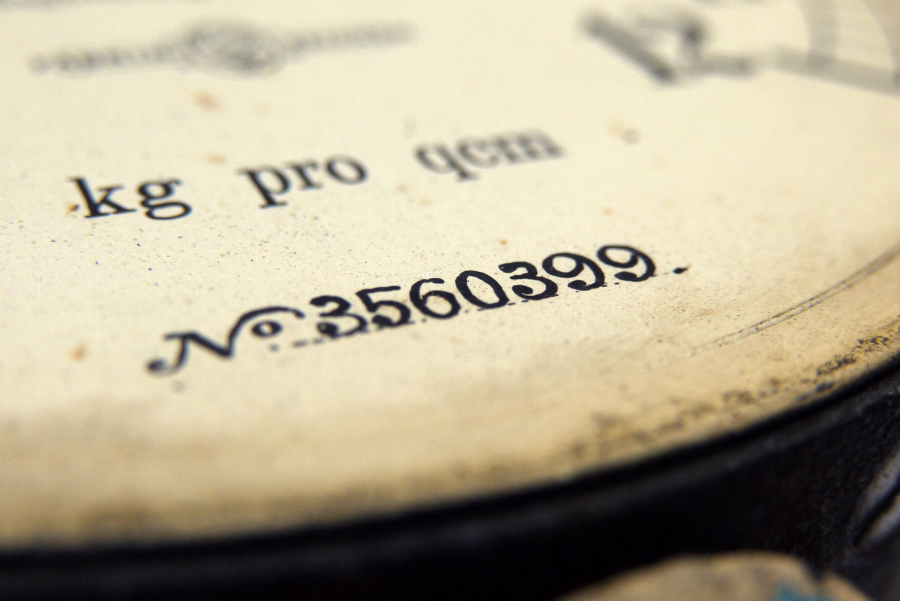
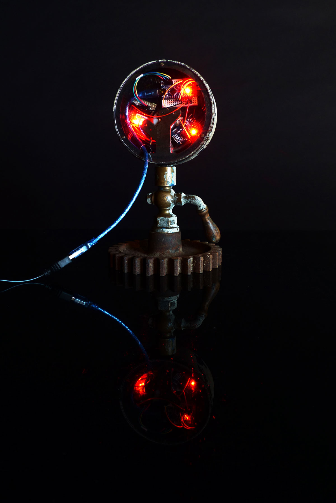
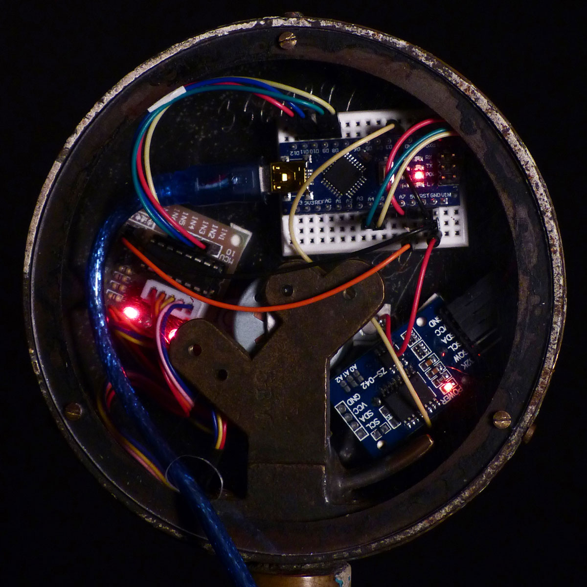
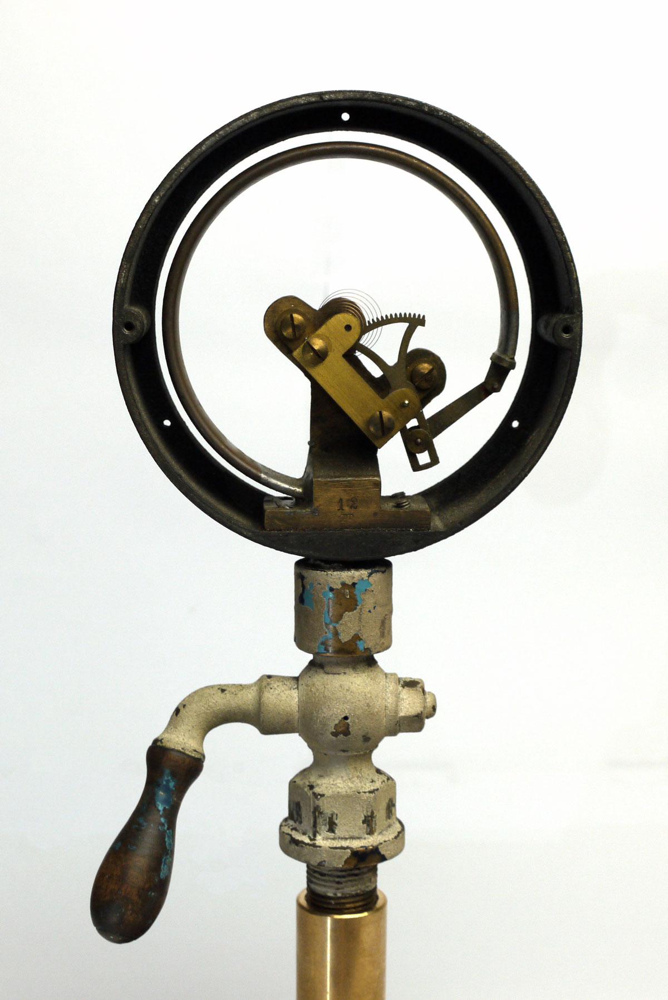
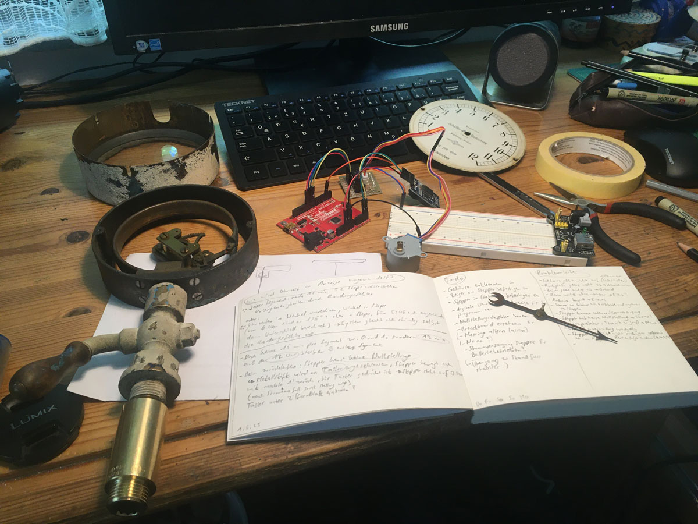
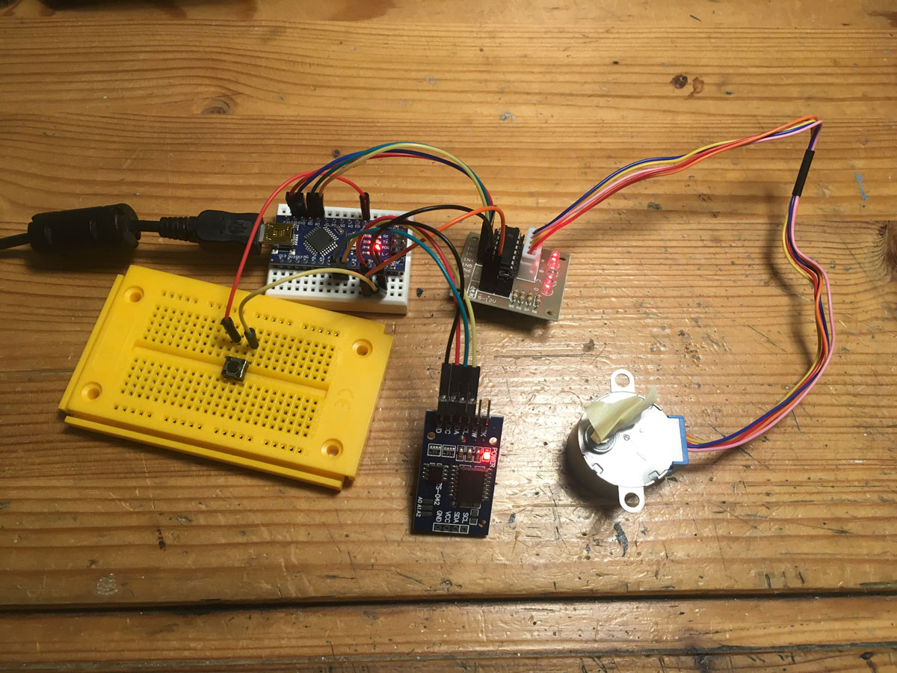
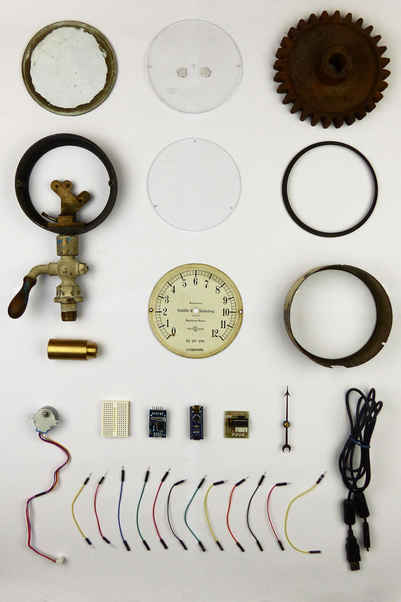

| Project name | NO_3560399 |
|---|---|
| Year | 2025 |
| About | Clock built inside a manometer. This project combines the sturdy look and mechanical feel from an old manometer from 1906 with the advanced possibilities of new technology. Together these elements create a quiet but powerful appearance that reminds of both tradition and innovation. The clock is controlled by a microcontroller, an Arduino Nano. Old and new are not only connected visually, but also technically. When the clock is restarted, the pointer position has to be reset. To do that, the motor moves counterclockwise until the pointer hits the metal pin next to the zero. An electrical circuit is closed and now the Arduino knows how the pointer is positioned. |